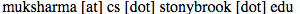

Mukul Sharma
Graduate student at Stony Brook University, New York
About me
- I joined Computer Science Department at Stony Brook University, New York in Fall 2016
- I work in File Systems Laboratory(FSL) under guidance of Prof. Erez Zadok
- I am reachable over email 
Grduate Courses
Fall-2016
- CSE506, Operating Systems, Prof. Erez Zadok, Fall 2016
- CSE548, Analysis of Algorithms, Prof. Rezaul A. Chowdhury, Fall 2016
- CSE509, System Security, Prof. Nick Nikiforakis, Fall 2016
- CSE587, Introduction to Theory of Computation, Prof. Leo Bachmair, Fall 2016
- CSE593, Independent Study, Prof. Erez Zadok, Fall 2016
Education
- Master in Computer Science, Stony Brook University, New York, August 2016 - Till date
- Bachelor in Electronics Engineering, Indian Institute of Technology (BHU), Varanasi, July 2008 - June 2012
Professional Experience
- Member of Technical Staff, NetApp India, July 2012 - August 2016
- Software Intern, Mentor Graphics India, May 2011 - July 2011
Resume
- Please email me for a copy
- Github